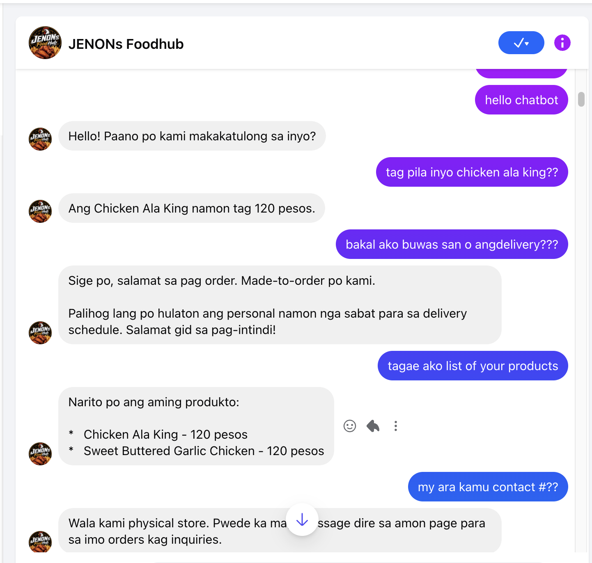
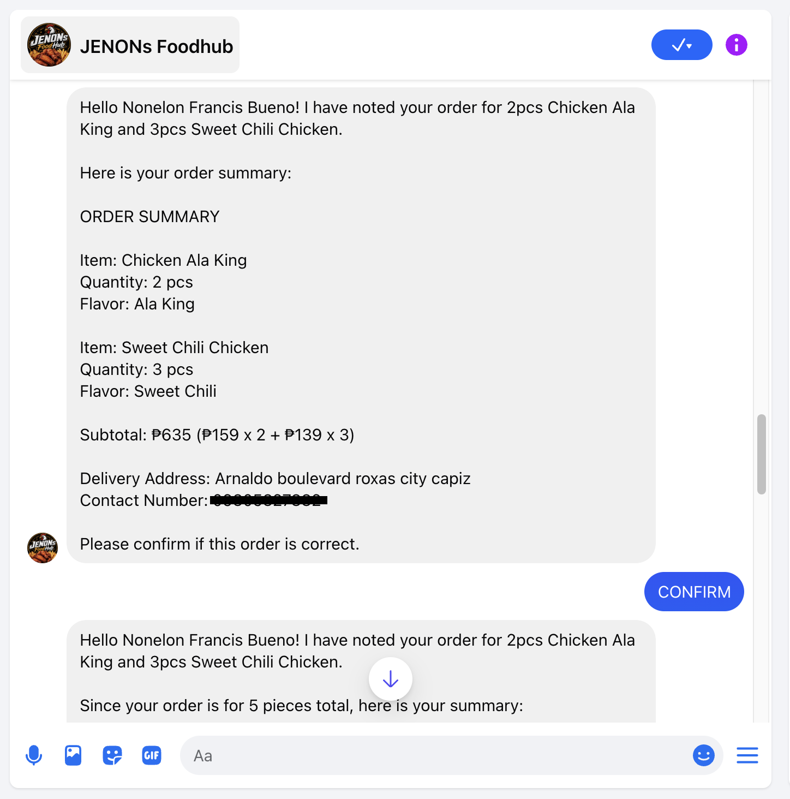
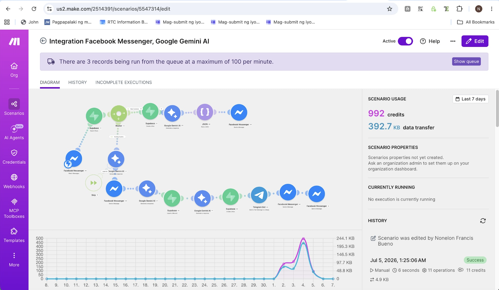
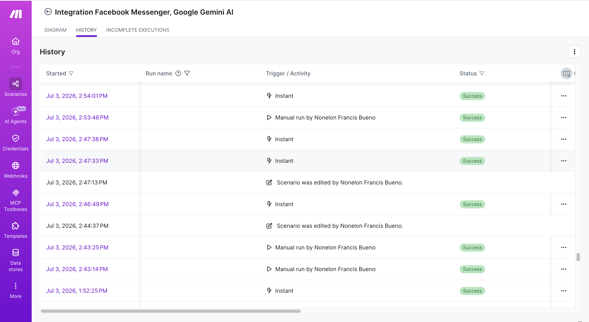
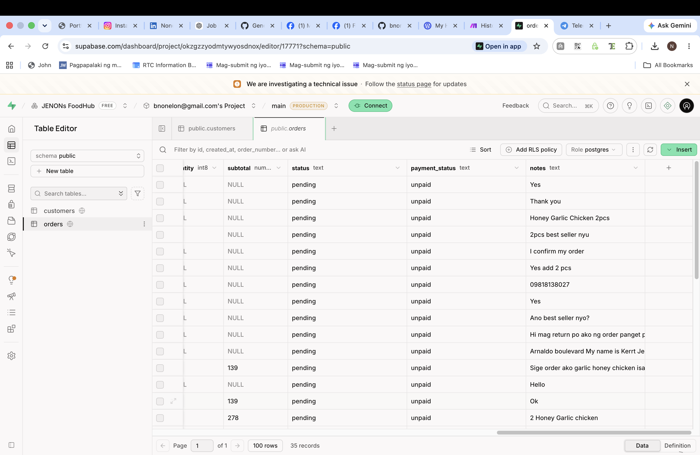
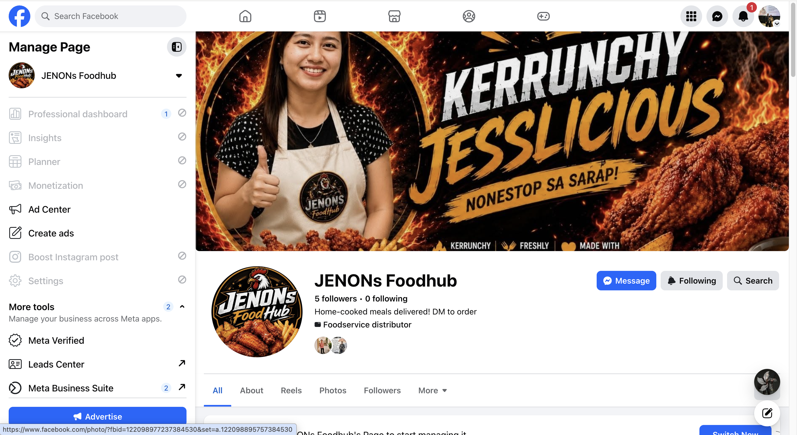
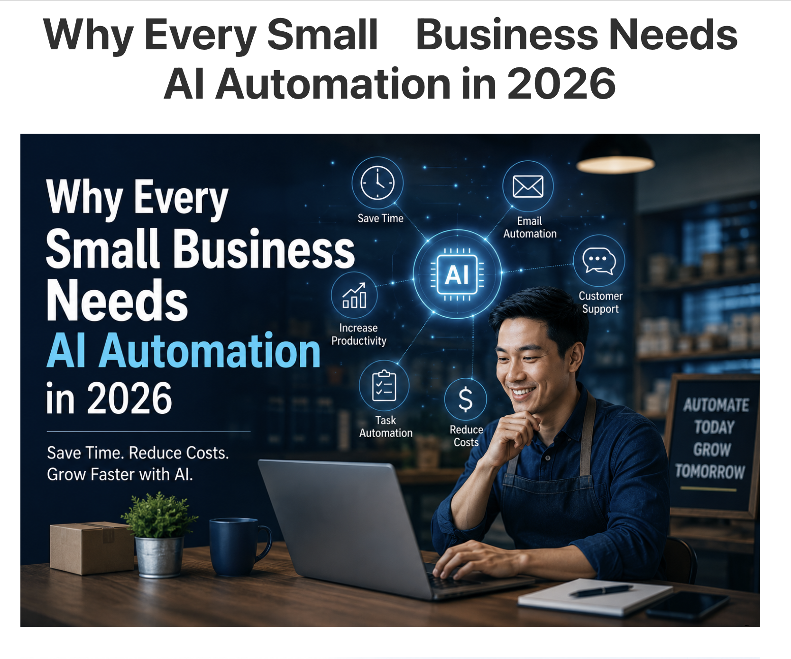
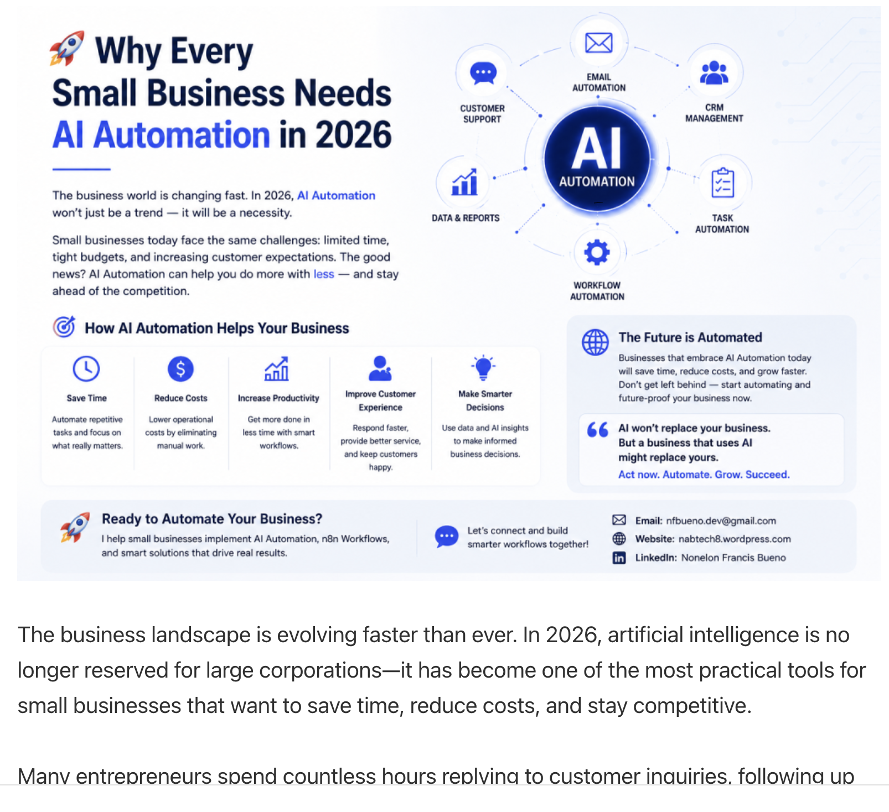

I help businesses automate repetitive work, eliminate manual processes, reduce operating costs, and scale faster through AI-powered automation, CRM systems, intelligent chatbots, and custom business integrations.
Hours Saved
AI Availability
Automation Tools
Business Systems
I build automation systems that help business owners reduce repetitive tasks, respond faster to customers, organize data, and operate more efficiently.
My focus is not only design, but practical systems that can support real operations such as customer inquiries, order tracking, lead collection, CRM records, and admin notifications.
Designed for small businesses, startups, restaurants, service providers, and online sellers.
Messenger chatbots that answer FAQs, assist customers, and collect order or lead details.
Make.com and n8n workflows that connect apps and automate repetitive business tasks.
Customer records, lead tracking, order monitoring, and organized business databases.
Modern business websites that build trust and help clients understand your services.
Connect Messenger, Supabase, Telegram, Google Sheets, AI tools, and business apps.
Automated follow-ups, lead capture, inquiry sorting, and customer status tagging.
A restaurant automation system built to handle customer inquiries, order summaries, customer records, and admin notifications.
From customer message to instant reply — fully automated.
Customer sends a message on Messenger.
AI reads and understands the customer’s question.
Order details or lead information is captured.
Customer data is stored securely in the CRM.
Admin receives instant notification.
Customer receives an automated reply instantly.
❌ Manual replies
❌ Missed inquiries
❌ Scattered customer details
❌ Slow order confirmation
✅ Instant AI replies
✅ Organized customer data
✅ Faster order handling
✅ Admin notifications
Understand your business workflow and pain points.
Map the best tools, steps, and automation logic.
Create chatbot, CRM, workflow, and integrations.
Test, improve, and prepare the system for use.
Actual outputs from Messenger chatbot, MAKE.COM workflow, Supabase database, and WordPress project.








Let’s build a smarter workflow that saves time, reduces manual work, and improves customer experience.